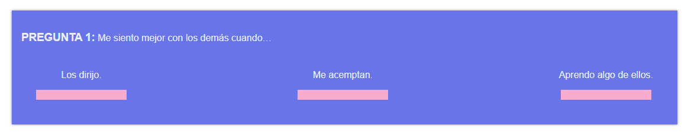

Instrucciones para el Inventario de la Motivación Personal:
Lea cuidadosamente cada frase incompleta y distribuya 10 puntos en los tres diferentes complementos. Asigne más puntos al complemento con el que más se identifique y menos a los demás:
Ejemplo:
Puede utilizar cualquier combinación que sume 10 puntos. Asegúrese de que no sean más ni menos de 10 puntos.
Este inventario no es un examen, ni hay respuestas buenas o malas, solo se busca que obtenga información útil para su conocimiento. Por lo tanto es importante que cuando lo conteste sea muy honesto y espontáneo. De igual manera, tenga cuidado de responder de acuerdo con lo que realmente es y no como quisiera ser.